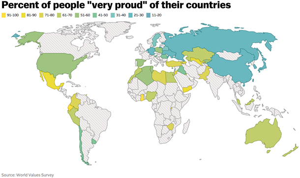
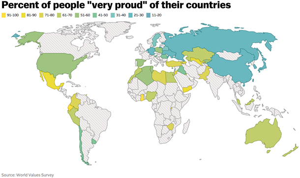

In meiner Masterarbeit habe ich mich mit einer methodischen Frage beschäftigt: In mehreren wissenschaftlichen Arbeiten, die in den letzten Jahren veröffentlicht wurden, wurden Deep-Learning-Methoden zur Bewertung der menschlichen Attraktivität eingesetzt. Allerdings haben diese Arbeiten eine wichtige Frage nicht geklärt: Generieren die verwendeten Methoden korrekte Daten und, falls nicht, wie können sie verbessert werden? Zu diesem Zweck habe ich acht Deep-Learning-Methoden auf Datensätze aus vier veröffentlichten wissenschaftlichen Artikeln angewandt und die Artikel anschließend repliziert. Da die Deep-Learning-Methoden keine korrekten Daten erzeugen konnten, habe ich dann zwei eigene Convolutional Neural Networks trainiert und zwei Studien durchgeführt, die geringfügig bessere Ergebnisse lieferten.
 

In diesem Projekt schlage ich einen neuen Grund vor, warum die Nichtbeantwortungsraten bei Umfragen von Land zu Land variieren können: Unsicherheit über die gesellschaftlich erwünschte Antwort. Mithilfe von Beta-Regression, statistischer Analyse und Datenvisualisierung in R zeige ich, dass in Ländern, in denen keine Position zu gesellschaftlich wichtigen Themen vorherrscht, die Nichtbeantwortungsrate bei Umfragen höher ist.

In diesem Projekt habe ich Tableau verwendet, um die Ungleichheit in den Vereinigten Staaten anhand von sechs verschiedenen Metriken auf der Ebene der Bundesstaaten und Countys darzustellen. Mit dem interaktiven Dashboard können Sie verschiedene Gebiete in den Vereinigten Staaten miteinander oder denselben Ort über Jahrzehnte hinweg vergleichen.

Dieses Projekt versucht ernsthaft, eine sehr frivole Frage zu beantworten: Wenn man in New York City ist und ein Eichhörnchen streicheln möchte, wohin sollte man gehen?
Vor einigen Jahren führte eine Bürgerforschungsgruppe eine Zählung aller Eichhörnchen im Central Park durch. Dabei wurde unter anderem erfasst, welche Eichhörnchen sich ihnen freiwillig näherten.
Mit SQL und Tableau analysiere und visualisiere ich die Daten, um die höchste Dichte an freundlichen Eichhörnchen zu finden.

Dies ist eine Sammlung von Projekten, die ich durchgeführt habe und die alle eine Form von A/B-Tests beinhalten.